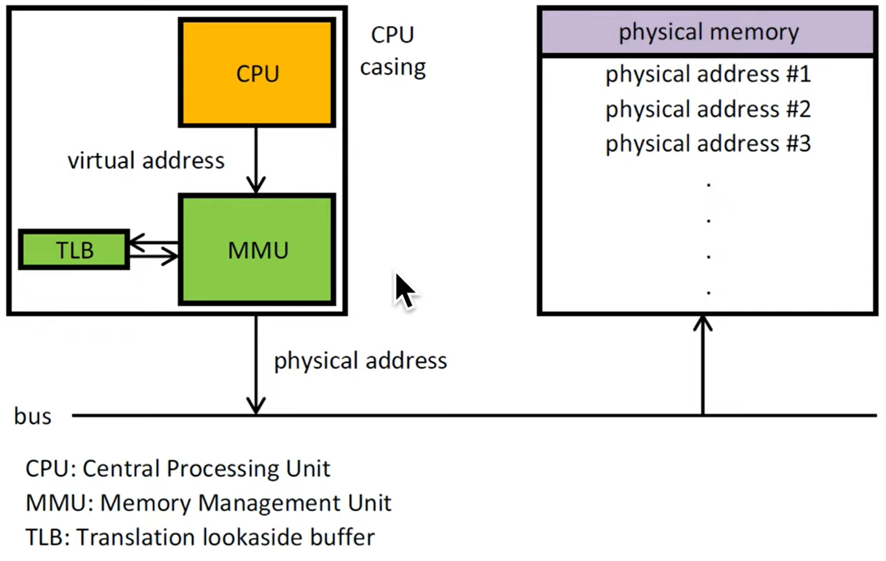

General scheme

Frames are page-sized chunks of physical memory
Via paging addresses are "virtual" in the sense there is no longer linear to physical address correlation
Another definition of "virtual" is that memory can be swapped to hard disk when not in use for a long period, and be demanded when a task is schechuled to use it. this allows the OS to pretend it has more RAM than it really does. but it comes with performance penalty.
2^64 = 18 exabytes. 2^32 = 4GB. your PC in this time of writing has 16GB -> 4GB*(2^2) = 2^34.

There a few translations forms as described in the table below.